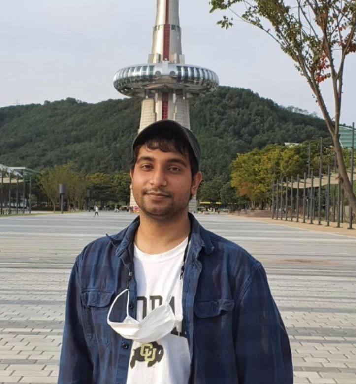

|
Pamul Yadav
I am a PhD Student at School of Integrated Technology, Yonsei University, working as a graduate researcher at STL Lab under the supervision of Prof. Shiho Kim. Before that, I did my bachelor's degree in Computer Science and Engineering from UNIST . Owing to the "convergence tech" nature of my department, my academic activities hover around the topics like:
- Autonomous Vehicles: Simulation, Algorithmic and Software Development.
- Reinforcement Learning (RL) Theory.
- I.
- Quantum Computing especially, Quantum Error Correction.
I aspire to develop autonomous systems that can bring ease in all facets of human lives. To this end, I am researching on the idea of developing agents capable of handling open-world novelties in real-time. For which, I am actively exploring the areas of generalization in RL and multi-agent RL.
In addition, I am deeply interested in future education methods. Developing SOTA technology-based educational methods is essential to equip future children to effectively learn in this information and AI age and cope up with the rapidly changing world around them.
External Links:
Email /
GitHub /
Google Scholar /
Linkedin
In-Page Navigation:
|

|
|
Publications and Pre-prints
|
|
IHCI 2021 Workshop
Pamul Yadav, Ashutosh Mishra, Junyong Lee, Shiho Kim
arXiv preprint 2022
|
|